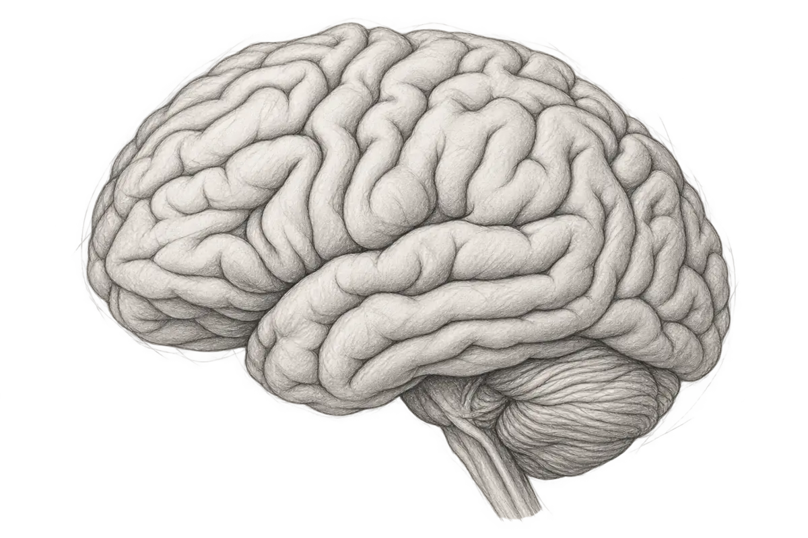

H—01 working archive

Musi · papers, code, questions
I study the brain and try to understand the mind. This is where I collect my work, reading, and thoughts on neuroscience, psychiatry, philosophy, and, somewhere along the way, artificial intelligence.
About me
Researchquestions · reading · models∿
Projectscode · experiments · tools⌘
Thoughtsessays · fragments¶
Bloglonger notes✎
Scrappersmall things to remember·
Aboutthe person behind the pages↗
notes
+
experiments
+
experiments